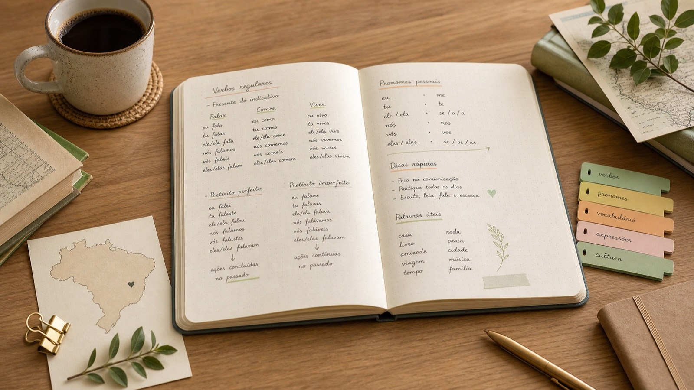

소리부터
A, B, C를 한국어 근사 발음으로 읽고, 포르투갈어가 영어처럼 읽히지 않는다는 감각만 잡습니다.
A · B · C · D · E
casa · cidade · café
Brazilian Portuguese Guidebook
처음 30분은 소리와 한 문장만 잡고, 그 다음에 A1 기본 문장, B단계 설명과 의견, Celpe-Bras 실전 과제로 천천히 확장하는 교재형 원고입니다.

0. Start Here
이 책은 끝까지 가면 Celpe-Bras까지 이어지지만, 입문자는 처음부터 전체를 훑지 않습니다. 첫날의 목표는 문법을 이해하는 것이 아니라, 포르투갈어 글자를 보고 소리를 내고 자기 이름을 넣은 첫 문장을 만드는 것입니다.
A, B, C를 한국어 근사 발음으로 읽고, 포르투갈어가 영어처럼 읽히지 않는다는 감각만 잡습니다.
A · B · C · D · E
casa · cidade · café
문법표를 외우기 전에 자기 이름, 국적, 공부하는 언어를 넣어 입으로 말합니다.
Oi, eu sou Minji.
Sou coreana.
Eu estudo português.
고급 문법과 시험 파트는 아직 열지 않습니다. 첫날에는 읽고, 따라 말하고, 짧게 녹음하면 충분합니다.
Eu falo devagar.
Eu estudo todos os dias.
자료실, B2 접속법, C단계 문체, Celpe-Bras 모의시험은 지금 당장 보지 않아도 됩니다. 이들은 A1 자기소개와 A2 일상 문장이 만들어진 뒤 쓰는 확장 도구입니다.
1. Learning Logic
이 교재의 흐름은 소리, 단어 덩어리, 기본 문장, 상황 대화, 긴 설명, 시험 과제로 이어집니다. 단계가 올라갈수록 새 문법을 무작정 추가하는 것이 아니라, 같은 재료를 더 긴 목적 있는 산출물로 바꿉니다.
처음부터 모든 표를 외우지 않습니다. 먼저 “내가 지금 말하려는 정보가 무엇인가”를 정하고, 그 정보에 맞는 도구를 하나씩 붙입니다.
| 단계 | 한국어 질문 | 포르투갈어 도구 | 예시 | 뒤에서 확장되는 것 |
|---|---|---|---|---|
| A1 소리읽기 시작 | 이 단어를 소리 낼 수 있나? | ABC, 모음, 강세 | casa, cidade, café | 듣기와 말하기의 기준음 |
| A1 문장기본 정보 | 누가 무엇이다/어디 있다/무엇을 하나? | ser, estar, ter, 현재시제 | Eu sou estudante. Eu estudo português. | 자기소개와 일상 설명 |
| A2 시간전후 관계 | 이미 끝난 일인가, 앞으로 할 일인가? | perfeito, ir + infinitivo | Ontem estudei. Amanhã vou estudar. | 경험담, 일정, 요청 |
| B1 이야기배경과 사건 | 그때의 상황인가, 딱 끝난 사건인가? | perfeito vs imperfeito | Morava em São Paulo quando recebi a mensagem. | 긴 경험담과 설명문 |
| B2 법사실과 바람 | 사실을 보고하나, 필요·바람을 말하나? | 직설법, 접속법 현재/과거/미래 | O governo investe. É importante que invista. | 사회 주제 의견과 제안 |
| C·시험목적 있는 산출 | 누구에게, 왜, 어떤 장르로 말하나? | 장르, 문체, 논리 연결어 | 공지문, 이메일, 의견문, 구술 답변 | Celpe-Bras 과제 수행 |
A
B
C
EX
2. A1 Starting Point
A1 시작부는 브라질식 포르투갈어를 처음 접하는 독자가 알파벳, 발음, 강세, 명사와 동사의 기본 구조를 익히고 짧은 자기소개를 완성하는 단계입니다.
3. A1 Contents
카드식 소개보다 책의 차례처럼 보이도록 장 번호, 학습 내용, 포함 코너를 한 줄 구조로 정리했습니다.
01
포르투갈어 알파벳 26자, 글자 이름, 모음과 자음, 처음 보는 단어 읽기
02
강세 규칙, 악센트 기호, 콧소리, 짧은 문장 따라 읽기
03
남성명사와 여성명사, 단수와 복수, 성수 일치의 첫 감각
04
정관사와 부정관사, 형용사의 위치와 일치, 간단한 묘사 문장
05
정체성, 상태, 위치, 소유, 나이 표현을 분리해서 익히기
06
-ar, -er, -ir 동사 변화, 주어대명사, 하루 일과 말하기
07
Oi, tudo bem?, você, senhor, senhora, 첫 만남 대화
08
기수와 서수 기초, horas, dias, meses, 가격 묻고 답하기
09
Eu queria..., Quanto custa?, onde, aqui, ali, perto, longe
10
6문장 자기소개 쓰기, 30초에서 1분 말하기, 자기 점검
4. A1 Manuscript
아래는 A1 시작부를 실제 교재처럼 읽을 수 있도록 확장한 초안입니다. 각 장은 목표, 핵심 설명, 예문, 단어장, 짧은 연습으로 구성됩니다.
01
Pronúncia
첫 장의 목표는 발음 규칙을 설명하기 전에, 포르투갈어 알파벳을 보고 글자 이름과 기본 소리를 연결하는 것입니다.
브라질식 포르투갈어는 영어처럼 A부터 Z까지 26개 글자를 씁니다. 초급자는 먼저 한국어식 근사 발음으로 글자 이름을 익히고, 작은 보조 표기로 실제 포르투갈어 철자명을 확인합니다.
브라질식 포르투갈어는 철자와 소리의 관계가 비교적 규칙적입니다. 다만 한국어 화자에게는 열린 모음과 닫힌 모음, 단어 끝의 r, lh와 nh 같은 소리가 낯설 수 있습니다.
casa · livro · família · português
Brasil · cidade · obrigado · senhora
ABC 이름을 먼저 말하고, 그다음 모음 a/e/i/o/u, 마지막으로 lh, nh, r 같은 낯선 철자 조합으로 넘어갑니다.
casa, livro, cidade, família, Brasil, português
내 이름을 알파벳으로 철자 말하기, A부터 Z까지 읽기, 쉬운 단어 6개를 소리 내어 읽기를 순서대로 합니다.
02
Ritmo
강세는 포르투갈어 듣기와 말하기의 중심입니다. 단어를 알아도 강세가 틀리면 알아듣기 어려워집니다.
악센트 기호가 있는 단어는 표시된 음절에 강세가 옵니다. 악센트가 없다면 보통 끝에서 두 번째 음절을 먼저 의심합니다. 이 규칙은 초급자가 긴 단어를 읽을 때 큰 기준점이 됩니다.
café · você · também
cidade · estudante · brasileiro
| 단어 | 읽기 힌트 | 강세 위치 | 한국어식 훈련 |
|---|---|---|---|
| café악센트 있음 | ca-FÉ | 마지막 음절 | “카페”의 뒤를 더 또렷하게 읽습니다. |
| você악센트 있음 | vo-CÊ | 마지막 음절 | “쎄”를 짧게 죽이지 않습니다. |
| cidade악센트 없음 | ci-DA-de | 끝에서 두 번째 음절 | 가운데 음절을 기준으로 리듬을 잡습니다. |
| música악센트 있음 | MÚ-si-ca | 첫 음절 | 첫 음절을 세우고 뒤를 가볍게 읽습니다. |
브라질식 억양은 문장 끝을 부드럽게 올리거나 내리며 감정을 자주 드러냅니다. 처음에는 문장 전체 리듬을 따라 하는 것이 좋습니다.
café, você, também, estudante, brasileiro, música
각 단어에서 강세가 오는 음절을 고르고, 천천히 한 번 빠르게 한 번 읽습니다.
Eu sou estudante.
Eu estudo português.
들은 단어에서 더 길고 또렷하게 들리는 음절에 밑줄을 긋습니다.
03
Substantivos
포르투갈어 명사는 남성 또는 여성으로 쓰이고, 단수와 복수에 따라 주변 단어도 함께 바뀝니다.
많은 남성명사는 -o, 많은 여성명사는 -a로 끝납니다. 하지만 모든 단어가 이 규칙을 따르지는 않으므로, 초급에서는 관사와 함께 외우는 편이 안전합니다.
| 기준 | 단수 | 복수 | 기억할 점 |
|---|---|---|---|
| 남성 -o많은 기본형 | o aluno | os alunos | 관사도 o에서 os로 바뀝니다. |
| 여성 -a많은 기본형 | a aluna | as alunas | 관사도 a에서 as로 바뀝니다. |
| -r, -s, -z끝소리 추가 | o professor | os professores | 보통 -es를 붙입니다. |
| 뜻으로 외우기예외 대비 | o problema | os problemas | -a로 끝나도 남성일 수 있습니다. |
단어 뜻만 외우면 나중에 형용사와 관사를 계속 틀립니다. livro가 아니라 o livro처럼 묶어 외우세요.
o livro, a casa, o carro, a cidade, o professor, a professora
단어 6개를 단수와 복수로 바꿔 쓰고, 관사도 함께 바꿉니다.
o carro → os carros
a cidade → as cidades
o professor → os professores
04
Artigos e Adjetivos
형용사는 명사와 성과 수를 맞추며, 대체로 명사 뒤에 옵니다. 이 감각이 생기면 짧은 묘사가 가능해집니다.
포르투갈어의 “좋은 책”은 보통 um livro bom처럼 명사 뒤에 형용사가 옵니다. 여성명사라면 uma casa bonita처럼 형용사도 여성형으로 바뀝니다.
um livro bom · uma casa bonita
os alunos brasileiros · as cidades grandes
| 형태 | 명사 | 형용사 | 완성 문장 |
|---|---|---|---|
| 남성 단수o / um | um livro | novo | É um livro novo. |
| 여성 단수a / uma | uma casa | nova | É uma casa nova. |
| 남성 복수os / uns | os livros | novos | Os livros são novos. |
| 여성 복수as / umas | as casas | novas | As casas são novas. |
bom/boa, novo/nova, bonito/bonita, brasileiro/brasileira, grande/grandes
대부분의 기본 형용사는 명사 뒤에 둡니다.
uma cidade grande
um aluno brasileiro
명사가 여성형이면 형용사도 여성형을 의심합니다.
uma professora coreana
uma casa bonita
명사가 복수면 형용사도 복수로 맞춥니다.
os alunos brasileiros
as ruas pequenas
grande처럼 성별은 같고 복수만 바뀌는 형용사도 있습니다.
um prédio grande
duas cidades grandes
05
Verbos Essenciais
이 세 동사는 초급 문장의 중심입니다. 한국어 번역보다 “어떤 정보를 말하는가”로 구분해야 합니다.
ser는 정체성, 국적, 직업처럼 비교적 안정적인 정보에 씁니다. estar는 위치와 일시적 상태에 씁니다. ter는 소유, 나이, 일부 상태 표현에 자주 쓰입니다.
| 동사 | 언제 쓰나 | 예문 | 한국어 판단 |
|---|---|---|---|
| sersou, é, somos | 정체성, 국적, 직업, 성격 | Ela é médica. | 그 사람/그것이 무엇인가? |
| estarestou, está, estamos | 위치, 일시적 상태, 감정 | Ela está no hospital. | 지금 어디/어떤 상태인가? |
| tertenho, tem, temos | 소유, 나이, 필요, 일부 상태 | Ela tem vinte anos. | 가지고 있나/나이가 몇인가? |
한국어 “이다”만 보고 전부 ser로 옮기면 안 됩니다. 위치는 estar, 나이는 ter가 기본입니다.
Eu sou estudante.
Ela é brasileira.
Eu estou em casa.
Nós estamos na escola.
Estou cansado.
A comida está fria.
Tenho vinte anos.
Temos uma dúvida.
06
Presente
현재시제는 지금 하는 행동뿐 아니라 습관과 일반적인 사실을 말할 때도 씁니다.
규칙동사는 사전형 끝의 -ar, -er, -ir를 떼고 주어에 맞는 현재 어미를 붙입니다. 브라질식 일상 회화와 Celpe-Bras 답안에서는 você가 매우 자주 쓰이고, 동사는 ele/ela와 같은 모양을 씁니다.
| 주어 | -ar: falar | -er: comer | -ir: abrir | 문장 예시 |
|---|---|---|---|---|
| eu나 | falo | como | abro | Eu falo português. |
| você / ele / ela당신 / 그 / 그녀 | fala | come | abre | Ela come em casa. |
| nós우리 | falamos | comemos | abrimos | Nós abrimos a loja. |
| vocês / eles / elas여러분 / 그들 / 그녀들 | falam | comem | abrem | Eles falam rápido. |
주어 + 현재동사 + 보충정보 순서로 둡니다.
Eu estudo português.
Você mora no Brasil.
Nós abrimos a loja cedo.
동사 앞에 não을 넣습니다. 동사 모양은 그대로 둡니다.
Eu não como carne.
Ela não abre a loja hoje.
문장 끝 억양을 올리거나 질문 표현을 앞에 둡니다.
Você fala português?
Onde vocês moram?
같은 동사라도 주어가 바뀌면 어미가 바뀝니다.
Eu trabalho em Seul.
Ela trabalha em Seul.
Nós trabalhamos em Seul.
Eu estudo português todos os dias. Também assisto a vídeos brasileiros e escrevo frases curtas. Quando tenho tempo, converso com colegas para praticar a pronúncia.
나는 매일 포르투갈어를 공부합니다. 브라질 영상을 보고 짧은 문장을 씁니다. 시간이 있을 때는 발음을 연습하려고 동료들과 대화합니다.
falar, estudar, morar, trabalhar, gostar, precisar, comer, beber, aprender, abrir, assistir, dividir
전체 표를 한 번에 외우기 어렵다면 eu, você/ele/ela, nós, vocês/eles/elas 순서로 말하면서 손으로 직접 씁니다.
07
Primeiro Contato
입문 회화는 길고 정확한 문장보다 자연스럽게 대화를 시작하고 이어 가는 능력이 중요합니다.
A: Oi, tudo bem?
B: Tudo bem, e você?
A: Eu sou Minji. Sou coreana.
B: Prazer, Minji.
você는 브라질에서 매우 널리 쓰이는 “당신/너” 표현입니다. 처음에는 senhor, senhora도 함께 익혀 격식을 조절합니다.
| 상황 | 기본 표현 | 조금 더 자연스럽게 | 한국어 감각 |
|---|---|---|---|
| 처음 인사가벼운 만남 | Oi. | Oi, tudo bem? | 안녕하세요, 잘 지내요? |
| 대답되묻기 | Tudo bem. | Tudo bem, e você? | 잘 지내요. 당신은요? |
| 이름 말하기자기소개 | Sou Minji. | Eu me chamo Minji. | 제 이름은 민지입니다. |
| 격식 조절처음 만난 어른 | Você é professor? | O senhor é professor? | 선생님이신가요? |
Prazer는 “만나서 반가워요”에 해당합니다. 짧지만 실제 대화에서 매우 자주 씁니다.
Oi, tudo bem?
Prazer!
Bom dia, senhora.
Muito prazer.
Eu sou coreano.
Moro em Seul.
Estudo português.
E você?
Como você se chama?
De onde você é?
08
Números e Tempo
숫자 표현은 여행 회화뿐 아니라 자기소개, 약속, 쇼핑, 시험 자료 이해에도 계속 등장합니다.
시간은 보통 São duas horas처럼 말하지만, 1시는 É uma hora처럼 단수로 씁니다. 가격을 물을 때는 Quanto custa?를 먼저 익히면 됩니다.
Que horas são? · São três horas.
Quanto custa? · Custa dez reais.
| 정보 | 묻는 말 | 대답 예시 | 주의할 점 |
|---|---|---|---|
| 1시단수 | Que horas são? | É uma hora. | 1시는 é를 씁니다. |
| 2시 이상복수 | Que horas são? | São duas horas. | 2시부터는 são를 씁니다. |
| 날짜일정 확인 | Que dia é hoje? | Hoje é dia oito. | 처음에는 숫자만 정확히 잡아도 됩니다. |
| 가격쇼핑 | Quanto custa? | Custa dez reais. | 브라질 화폐는 real/reais입니다. |
um, dois, três, hoje, amanhã, hora, dia, mês, real, reais
É uma hora.
São três e meia.
Hoje é segunda-feira.
A prova é amanhã.
Custa dez reais.
São cinquenta reais.
숫자는 듣기에서 빨리 지나갑니다. 시간, 날짜, 가격만 따로 받아쓰는 훈련이 필요합니다.
09
Situações
상황 회화는 완벽한 문법보다 필요한 의도를 짧고 분명하게 전달하는 연습입니다.
Eu queria um café, por favor.
Onde fica o metrô?
Quanto custa esta camiseta?
É perto daqui?
Eu queria...는 정중하게 원하는 것을 말할 때 유용합니다. 길을 물을 때는 onde, perto, longe를 함께 익힙니다.
| 상황 | 필수 표현 | 응답 듣기 | 한국어 판단 |
|---|---|---|---|
| 카페 주문원하는 것 말하기 | Eu queria um café. | Mais alguma coisa? | 더 필요한지 묻는 말입니다. |
| 위치 묻기길 찾기 | Onde fica o metrô? | Fica perto daqui. | 여기서 가깝다는 뜻입니다. |
| 가격 확인쇼핑 | Quanto custa esta camiseta? | Custa trinta reais. | 가격 숫자를 바로 메모합니다. |
| 결제방법 묻기 | Posso pagar com cartão? | Pode, sim. | 가능하다는 짧은 답입니다. |
브라질의 카페나 가게에서는 짧은 인사 후 주문하는 흐름이 자연스럽습니다. Oi, tudo bem?으로 시작해도 좋습니다.
Eu queria um pão de queijo.
Para viagem, por favor.
Onde fica a estação?
É longe daqui?
Quanto custa?
Tem desconto?
Obrigado/Obrigada.
Tenha um bom dia.
10
Projeto A1
마지막 장은 새 문법을 더 넣기보다, Part 1에서 배운 재료를 실제 산출물로 묶는 단계입니다.
이름, 국적, 사는 곳, 직업이나 공부, 좋아하는 것, 포르투갈어를 배우는 이유를 넣어 6문장 자기소개를 씁니다. 그 다음 소리 내어 읽고, 30초에서 1분 말하기로 확장합니다.
Oi, eu sou Minji. Sou coreana.
Eu moro em Seul. Eu estudo português.
Eu gosto de música brasileira.
성수 일치, ser와 estar, 현재시제 동사 어미, 발음과 강세를 한 번씩 확인합니다.
짧은 글 1개, 녹음 파일 1개, 모르는 단어 목록 1개를 남깁니다.
Part 2에서는 과거 표현, 전치사, 더 긴 일상 대화로 확장합니다.
Oi, eu sou Minji. Sou coreana e moro em Seul. Eu estudo português porque gosto de música brasileira. Também quero viajar para o Brasil. Eu falo português devagar, mas estudo todos os dias.
안녕하세요, 저는 민지입니다. 저는 한국 사람이고 서울에 삽니다. 브라질 음악을 좋아해서 포르투갈어를 공부합니다. 브라질 여행도 하고 싶습니다. 포르투갈어는 천천히 말하지만 매일 공부합니다.
5. Repeated Inserts
Banco de Palavras
단어, 동사, 전치사 결합을 장별로 누적합니다.
Fala Brasil
교과서 표현과 실제 구어 표현의 차이를 다룹니다.
Erros Comuns
성수 일치, 전치사, 동사 선택 실수를 초반부터 잡습니다.
Pausa Brasileira
인사, 카페, 시간 감각처럼 언어와 붙은 문화를 설명합니다.
5.1 Listening Lab
듣기는 별도 부록으로 밀어두지 않고, A1 문장 읽기부터 Celpe-Bras 듣기 기반 과제까지 단계적으로 붙입니다. 처음에는 한국어 과제 지시를 보고, 포르투갈어 음성을 여러 번 들으며 강세와 문장 리듬을 따라 합니다.
현재 로컬 HTML audio 파일은 교재용 자체 연습 음원으로 취급합니다. 원어민 녹음으로 검증된 공식 음원이 아니므로, 실제 시험 전에는 Inep 공개 자료, 시험장 안내, 원어민 발화 자료와 함께 대조하세요.
짧은 문장을 듣고 이름, 국적, 공부하는 언어를 잡아냅니다.
Oi, tudo bem? Eu sou Minji. Sou coreana. Eu estudo português.
오이, 투두 벵? 에우 소우 민지. 소우 코레아나. 에우 이스투두 포르투게스.
과거시제 문장에서 이동, 구매, 요청 표현을 구분합니다.
화자가 어디에 갔는지, 무엇을 샀는지, 무엇을 물어봤는지 한국어로 적습니다.
실전처럼 핵심 정보를 메모한 뒤 이메일, 공지문, 요청문으로 변환합니다.
마감일, 제출 자료, 제출 방법을 포함해 친구에게 안내 이메일을 씁니다.
6. Banco de Palavras A1
단어장은 필요합니다. 다만 뒤 부록에만 두지 않고, Part 안에서 먼저 쌓고 마지막에 다시 합쳐 보는 방식이 좋습니다.
pessoa, amigo, amiga, família, professor, estudante, colega
Brasil, Coreia, brasileiro, coreano, português, língua, cidade
ser, estar, ter, falar, morar, estudar, gostar, querer
hoje, amanhã, agora, aqui, perto, longe, caro, barato
7. Sample Spread
ser는 정체성, 국적, 직업처럼 비교적 안정적인 정보를 말할 때 쓰고, estar는 위치나 일시적 상태를 말할 때 먼저 익힙니다.
Eu sou coreano.
Eu estou em Seul.
“나는 서울에 있다”는 정체성이 아니라 위치입니다. 그래서 Eu estou em Seul이 자연스럽습니다.
교재식 Como vai?도 가능하지만, 실제 입문 회화에서는 Oi, tudo bem?을 먼저 익히는 편이 좋습니다.
8. Mini Desafio
이 파트의 마지막 목표는 “외운 문장”이 아니라, 자신에 대한 정보를 바꿔 넣어 짧은 자기소개를 구성하는 것입니다. 아래 항목을 체크하면 진행 상태가 저장됩니다.
9. Resource Library
자료실은 처음부터 다 읽는 공간이 아닙니다. A1 자기소개가 끝난 뒤, 단어장, 듣기, 기출형 문제, Celpe-Bras 공식 자료를 필요한 목적에 맞게 꺼내 씁니다.
본문과 자료실을 어떤 순서로 반복할지 12주 루틴으로 정리합니다.
OfficialInep 공식 자료로 이동하고, 한 회분을 풀이·분석·재작성 루틴으로 바꿉니다.
Themes건강, 교육, 도시, 환경, 노동, 문화 주제를 답안 재료로 바꿉니다.
Expressions문제 제기, 원인, 결과, 비교, 양보, 제안 표현을 답안 틀로 익힙니다.
Reading자체 제작 지문을 핵심 정보, 요약, Celpe-Bras식 답안으로 전환합니다.
Genre이메일, 의견문, 요청문, 공지문을 독자와 목적에 맞게 씁니다.
Oral개인 질문, 사회 주제, 요소 자료 반응을 녹음 루틴으로 훈련합니다.
Errors전치사, 관사, 성수 일치, 직역투, 발음 오류를 줄입니다.
VocabularyA1 기본어부터 C단계 답안 표현까지 주제별로 누적합니다.
Practice공식 기출을 대체하지 않는 자체 제작 문제로 유형을 훈련합니다.
Audio본문 오디오를 모아 반복 듣기와 따라 말하기 루틴으로 씁니다.
Celpe-Bras공식 자료 링크와 기출형 쓰기·구술 과제를 함께 확인합니다.
Mock Exam3시간 쓰기와 20분 구술을 한 번에 굴리는 최종 점검 파일입니다.
Clinic부족한 답안과 상위 답안을 비교하고 오답 로그로 고칩니다.
10. A2 Everyday Expansion
Part 2의 목표는 짧은 자기소개를 넘어, 하루 일과, 과거 경험, 계획, 요청, 이동, 쇼핑, 병원, 집 구하기 같은 일상 상황을 스스로 처리하는 것입니다.
de, em, a, para, por를 관사와 함께 익힙니다. 초급자는 do, na, ao를 단어처럼 빠르게 인식해야 합니다.
Eu moro no Brasil. · Eu vou ao mercado.
Ela é de São Paulo. · Este presente é para você.
| 결합 | 형태 | 예문 | 한국어 판단 |
|---|---|---|---|
| de + o출신·소속 | do | Eu sou do Brasil. | 브라질 출신입니다. |
| de + a출신·소속 | da | Ela é da Coreia. | 한국 출신입니다. |
| em + o위치 | no | Moro no Brasil. | 브라질에 삽니다. |
| em + a위치 | na | Estou na escola. | 학교에 있습니다. |
| a + o방향·도착점 | ao | Vou ao mercado. | 시장으로 갑니다. |
| a + a방향·도착점 | à | Vou à escola. | 학교로 갑니다. |
| por + o/a통로·대가 | pelo / pela | Pago pelo curso. | 수업에 대한 비용을 냅니다. |
끝난 행동을 말합니다. 여행, 어제 한 일, 지난주 경험을 설명할 때 가장 먼저 쓰는 과거입니다.
Ontem eu estudei português.
No fim de semana, visitei um amigo.
| 주어 | -ar: falar | -er: comer | -ir: abrir | 문장 예시 |
|---|---|---|---|---|
| eu나 | falei | comi | abri | Eu falei com meu amigo. |
| você / ele / ela당신 / 그 / 그녀 | falou | comeu | abriu | Ela comeu em casa. |
| nós우리 | falamos | comemos | abrimos | Nós abrimos a loja cedo. |
| vocês / eles / elas여러분 / 그들 / 그녀들 | falaram | comeram | abriram | Eles falaram com a professora. |
ontem
na semana passada
no fim de semana
Eu estudo hoje. → Eu estudei ontem.
Ela abre a loja. → Ela abriu a loja.
Nós comemos em casa. → Nós comemos em casa ontem.
querer, poder, precisar, ir + infinitivo로 부탁, 허락, 필요, 미래 계획을 말합니다.
Eu preciso de ajuda. · Posso pagar com cartão?
Vou estudar amanhã de manhã.
“브라질에서의 첫 일주일”이라는 주제로 120단어 일기와 2분 말하기를 만듭니다. 위치, 시간, 가격, 요청, 과거 행동이 모두 들어가야 합니다.
Na semana passada, eu cheguei a Salvador. No primeiro dia, fui ao mercado e comprei frutas. Também precisei de ajuda para comprar um cartão de transporte. Gostei da cidade porque as pessoas foram simpáticas, mas fiquei cansado porque caminhei muito.
10.5 Practice Pack
여기서는 A1과 A2를 읽기만 하지 않고 직접 손으로 바꿔 봅니다. 문제를 먼저 풀고, 정답 예시를 본 뒤, 마지막에는 같은 재료로 짧은 글과 말하기를 만듭니다.
글자를 보고 한국어식 근사 발음으로 먼저 읽고, 강세가 오는 음절을 표시합니다.
ca-FÉ, vo-CÊ, ci-DA-de, MÚ-si-ca. casa의 s는 모음 사이에서 “ㅈ”처럼 들릴 수 있고, Brasil의 s는 지역과 위치에 따라 “ㅈ/ㅅ” 사이로 들립니다.
주어, 성수, 동사를 하나씩 바꿔 보며 기본 문장이 어떻게 움직이는지 확인합니다.
Ela é estudante. Nós somos estudantes. / uma casa nova, uns livros novos, umas casas novas. / Eu estou em Seul. Eu tenho vinte anos. Eu sou coreano/coreana. / Eu não estudo português. Você estuda português?
현재 문장을 과거와 계획으로 바꾸고, 전치사 축약과 요청 표현을 같이 점검합니다.
Ontem eu estudei. Amanhã vou estudar. / Estou no banco. Vou à escola. Sou da Coreia. / Preciso de uma informação. Posso pagar com cartão? Vou enviar o documento amanhã.
20분 안에 읽기, 문법 변형, 짧은 쓰기, 말하기를 모두 처리합니다. 점수보다 끝까지 완성하는 것이 우선입니다.
Oi, eu sou Minji. Sou coreana e moro em Seul. Eu estudo português todos os dias. Ontem estudei em casa e falei com uma amiga. Amanhã vou assistir a um vídeo brasileiro e vou escrever cinco frases novas. Ainda falo devagar, mas quero praticar mais.
11. B1 Narrative Control
B1에서는 단문을 이어 붙이는 수준을 넘어 사건의 배경, 순서, 이유, 결과를 설명합니다. 이 단계부터 “말은 되지만 어색한 문장”을 줄이는 편집 훈련이 들어갑니다.
perfeito는 끝난 사건, imperfeito는 배경·습관·진행 중이던 상태를 말합니다.
Quando eu morava em São Paulo, estudava português todos os dias.
Ontem encontrei um amigo e conversamos por duas horas.
porque, quando, mas, então, por isso로 문장을 연결합니다.
요청, 사과, 설명, 제안을 담은 이메일을 쓰고, 일상 주제에 대해 180단어 의견문을 씁니다.
Prezados, escrevo para solicitar informações sobre o curso.
Na minha opinião, o transporte público deve ser mais acessível.
브라질 생활 문제 하나를 정해 상황 설명, 원인, 해결 요청을 포함한 이메일을 작성합니다.
배경: Quando eu morava em São Paulo, usava ônibus todos os dias. 사건: Um dia, perdi meu cartão de transporte. 결과: Por isso, entrei em contato com a empresa e pedi uma segunda via.
11.5 Practice Pack
B1은 문장을 많이 아는 단계가 아니라, 사건을 시간 순서로 정리하고 이유와 결과를 붙이는 단계입니다. 아래 문제는 과거 시제, 연결어, 이메일, 2분 말하기를 한 묶음으로 반복하게 만듭니다.
괄호 안의 동사를 pretérito perfeito 또는 imperfeito로 바꿉니다.
1. morava, ia. 2. perdi, chovia. 3. fazia, esperei/esperava. 4. cheguei, estava. 사건은 끝난 행동으로, 배경은 그때의 상태나 진행 중인 상황으로 처리합니다.
짧은 문장을 그대로 나열하지 말고, 이유·시간·결과가 보이도록 3문장으로 줄입니다.
Eu cheguei ao Brasil. Eu não conhecia a cidade. Eu precisava comprar um chip. Fui ao shopping. A loja estava fechada. Pedi ajuda a uma funcionária do hotel.
Quando cheguei ao Brasil, eu ainda não conhecia a cidade e precisava comprar um chip. Por isso, fui ao shopping, mas a loja estava fechada. Depois, pedi ajuda a uma funcionária do hotel.
아래 메모를 보고 집주인에게 보내는 160-190단어 이메일을 씁니다.
Prezado senhor, escrevo para informar um problema no apartamento. Desde ontem à noite, o chuveiro não está funcionando corretamente e não há água quente. Hoje de manhã, entrei em contato com a administração do prédio, mas ainda não recebi resposta. Por isso, gostaria de solicitar uma visita técnica amanhã de manhã, se possível. Tenho aula à tarde e não estarei em casa depois das 14h. Agradeço a atenção e aguardo retorno.
“처음으로 외국어로 문제를 해결한 경험”을 2분 동안 말합니다.
12. B2 Argument and Public Topics
B2부터는 개인 경험보다 사회 주제가 중요해집니다. 교육, 노동, 건강, 도시, 환경, 기술 같은 주제에 대해 원인과 결과, 찬반, 대안을 말할 수 있어야 합니다.
접속법은 단순히 “다른 현재형”이 아니라, 말하는 사람이 사실을 보고하는지 아니면 바람·필요·가능성을 말하는지 보여 주는 법입니다. É importante que..., Espero que..., Quero que... 뒤에서는 현재나 가까운 미래에 바라는 일을 접속법 현재로 표현합니다.
É importante que o governo invista em educação.
Espero que as pessoas tenham mais acesso à saúde.
| 동사 | ele/ela/você | eles/elas/vocês | 예문 |
|---|---|---|---|
| ser이다 | seja | sejam | É necessário que a política seja clara. |
| ter가지다 | tenha | tenham | Espero que todos tenham acesso à saúde. |
| investir투자하다 | invista | invistam | É importante que o governo invista mais. |
| fazer하다 | faça | façam | Quero que a escola faça uma reunião. |
O governo investe pouco.
As escolas têm problemas.
É necessário que o governo invista mais.
Espero que as escolas tenham apoio.
Era importante que o governo investisse mais.
Eu esperava que a escola fizesse uma reunião.
Quando o governo investir mais, haverá melhores resultados.
Se a escola fizer uma reunião, os pais poderão participar.
O texto mostra que muitos jovens não têm acesso a cursos de qualidade. Por isso, é importante que o governo invista em formação profissional e que as escolas tenham mais apoio. Quando essas medidas forem ampliadas, será possível reduzir parte da desigualdade.
Embora, apesar de, por outro lado, no entanto는 단순 찬반을 넘어 “인정할 점은 인정하고, 그래도 내 결론을 유지하는” B2식 문단을 만드는 핵심 도구입니다. 여기서 중요한 것은 접속사 이름보다 문장의 방향입니다.
Embora a medida seja cara, ela pode reduzir desigualdades.
Por outro lado, é preciso considerar o custo para as famílias.
| 표현 | 뒤에 오는 형태 | 한국어 감각 | 답안 예문 |
|---|---|---|---|
| embora | 접속법 | 비록 ...이지만 | Embora a proposta seja positiva, ela exige planejamento. |
| apesar de | 명사 또는 infinitivo | ...에도 불구하고 | Apesar do custo inicial, a medida pode trazer benefícios. |
| no entanto | 새 문장 | 그러나, 앞 내용과 반대 방향 | A campanha é útil. No entanto, falta divulgação nos bairros. |
| por outro lado | 새 관점 | 다른 한편으로 | Por outro lado, os comerciantes precisam de alternativas. |
| isso não significa que | 접속법 | 그렇다고 해서 ...라는 뜻은 아니다 | Isso não significa que a escola deva proibir toda tecnologia. |
Eu concordo. A medida é boa.
Embora a medida tenha custos, ela pode ampliar o acesso de grupos vulneráveis.
Por isso, a prefeitura deve implementar a proposta de forma gradual e transparente.
Embora a ampliação do transporte público exija investimento, ela pode reduzir desigualdades entre bairros centrais e periféricos. Por outro lado, é preciso considerar o impacto financeiro para a prefeitura. Por isso, a medida deve ser implementada de forma gradual, com avaliação dos resultados e divulgação clara para os moradores.
뉴스와 칼럼은 “내용 이해”에서 끝나지 않습니다. Celpe-Bras형 답안에서는 자료 속 사실을 독자에게 필요한 행동, 요청, 의견으로 바꿔야 합니다. 제목과 리드는 핵심 상황, 통계는 근거, 인용은 이해관계자, 필자의 관점은 답안의 방향을 잡는 데 사용합니다.
| 읽기 단계 | 확인 질문 | 답안에서 쓰는 방식 |
|---|---|---|
| 상황 | 어떤 문제가 생겼나? | 첫 문장에서 문제를 요약합니다. |
| 대상 | 누가 영향을 받나? | 학생, 주민, 노동자처럼 독자를 구체화합니다. |
| 근거 | 자료가 보여 주는 사실은 무엇인가? | 숫자나 인용을 자신의 문장으로 바꿉니다. |
| 한계 | 자료가 말하지 않는 조건은 무엇인가? | 양보와 제안으로 연결합니다. |
Segundo a reportagem, a nova linha de ônibus reduziu o tempo de deslocamento até o centro. No entanto, moradores de duas ruas passaram a caminhar mais até o ponto. Esse dado mostra que a política pode ser positiva, mas precisa considerar a acessibilidade local.
사회 이슈 기사 1개를 읽고, 관련 기관에 제안문을 씁니다. 단순 요약이 아니라 독자, 장르, 근거, 요청 행동을 분명히 해야 합니다. B2 답안은 “나는 이렇게 생각한다”보다 “자료를 보니 이 독자에게 이런 행동이 필요하다”에 가까워야 합니다.
Prezados responsáveis, escrevo para comentar a mudança apresentada no material. A nova medida pode melhorar o acesso ao serviço, mas ainda deixa parte dos moradores sem informação suficiente. Por isso, solicito que a instituição divulgue os horários em linguagem clara e ofereça um canal simples para dúvidas.
educação: acesso, evasão escolar, ensino público, formação profissional
saúde: prevenção, atendimento, saúde mental, qualidade de vida
trabalho: desemprego, renda, direitos trabalhistas, informalidade
meio ambiente: reciclagem, enchentes, desmatamento, energia limpa
Embora a tecnologia facilite o acesso à informação, ela também pode aumentar a desigualdade quando parte da população não tem internet de qualidade. Por isso, políticas públicas de inclusão digital devem combinar infraestrutura, formação de professores e acesso gratuito em espaços comunitários.
12.5 Practice Pack
B2에서는 자료를 보고 자신의 주장으로 바꾸는 힘이 필요합니다. 사실 보고, 요구 표현, 양보, 제안문을 순서대로 훈련하면 Celpe-Bras 쓰기 과제의 골격이 생깁니다.
직설법 현재 문장을 É necessário que... 또는 É importante que... 구조로 바꿉니다.
É importante que as escolas ofereçam apoio psicológico. É necessário que o governo invista em transporte público. É fundamental que as empresas respeitem os direitos dos trabalhadores. É desejável que a prefeitura crie espaços culturais nos bairros.
아래 주장에 반대 관점 하나를 인정한 뒤, 자신의 결론을 유지하는 문단을 만듭니다.
Tema: “O uso de celulares em sala de aula deve ser proibido.”
조건: Embora, por outro lado, por isso 중 두 개 이상을 사용합니다.
Embora o celular possa atrapalhar a concentração dos alunos, a proibição total nem sempre resolve o problema. Por outro lado, o uso sem orientação pode aumentar a distração durante as aulas. Por isso, a escola deve criar regras claras e ensinar os estudantes a usar a tecnologia para pesquisa e produção de conteúdo.
자체 제작 자료를 읽고, 학교 게시판에 올릴 제안문을 180-220단어로 씁니다.
Em uma pesquisa interna, 62% dos estudantes disseram que estudam melhor em espaços silenciosos, mas apenas 18% usam a biblioteca da escola. Muitos alunos afirmaram que não conhecem os horários de funcionamento nem as regras para reservar salas de estudo.
학생회 대표로서 학교에 도서관 이용 안내와 조용한 학습 공간 개선 캠페인을 제안합니다.
A pesquisa mostra que muitos estudantes precisam de espaços silenciosos, mas poucos utilizam a biblioteca. Isso indica que o problema não é apenas falta de interesse, mas também falta de informação. Por esse motivo, propomos que a escola divulgue os horários da biblioteca em cartazes e nas redes sociais, além de criar um sistema simples de reserva das salas de estudo. A campanha pode aumentar o uso do espaço e melhorar a rotina de preparação dos alunos.
아래 주제로 의견문을 씁니다. 첫 문단은 입장, 둘째 문단은 근거, 셋째 문단은 반론과 제안으로 구성합니다.
“공공장소에서 무료 인터넷을 확대하는 정책은 사회적 불평등을 줄이는 데 도움이 되는가?”
13. Advanced Discourse
C단계는 이 교재 안에서 쓰는 CEFR식 학습 스캐폴드입니다. Celpe-Bras 공식 등급명은 Intermediário, Intermediário Superior, Avançado, Avançado Superior이며, 최고 목표는 Avançado Superior입니다. 이 단계의 목표는 “맞는 문장”이 아니라 상황에 맞는 문체와 설득력입니다. 글의 장르, 독자, 목적에 따라 격식과 어휘, 문단 전개를 조절해야 합니다.
공식 등급과 일정은 매 회차 공고에 따라 확인합니다. 최신 정보는 Inep Celpe-Bras FAQ, Celpe-Bras 최신 공지, 공개 provas를 기준으로 삼으세요.
친구에게 쓰는 메시지, 학교에 보내는 이메일, 공공기관에 보내는 요청문, 칼럼형 의견문은 같은 내용을 다뤄도 문체가 달라야 합니다. 고급 답안은 어려운 단어를 늘리는 것이 아니라, 독자와 목적에 맞게 직접성, 정중함, 객관성을 조절하는 데서 갈립니다.
| 상황 | 가까운 말투 | 공식 답안 말투 | 왜 바꾸나 |
|---|---|---|---|
| 정보 요청 | Você pode me mandar o horário? | Gostaria de solicitar o horário de atendimento. | 기관 독자에게는 직접 명령보다 요청형이 자연스럽습니다. |
| 불편 제기 | Isso está atrapalhando muita gente. | A situação tem prejudicado parte dos usuários. | 감정 표현을 사회적 영향으로 바꿉니다. |
| 제안 | Seria bom avisar melhor. | Seria importante ampliar a divulgação das informações. | 막연한 좋고 나쁨을 실행 가능한 조치로 바꿉니다. |
| 칼럼 의견 | Acho que esse tema é importante. | Essa questão revela a necessidade de discutir acesso e responsabilidade pública. | 개인 감상을 쟁점과 함의로 확장합니다. |
tomar uma decisão, prestar atenção, ter acesso a, lidar com처럼 같이 쓰이는 덩어리를 익힙니다. C단계 답안에서 어색함은 단어 뜻을 몰라서보다 한국어식 결합을 그대로 옮길 때 자주 생깁니다.
| 피할 표현 | 자연스러운 표현 | 예문 |
|---|---|---|
| fazer uma decisão | tomar uma decisão | A instituição deve tomar uma decisão transparente. |
| fazer um debate | promover um debate | A escola pode promover um debate com as famílias. |
| ter problema | enfrentar um problema | Muitos bairros enfrentam problemas de mobilidade. |
| dar informação | fornecer informações | O posto deve fornecer informações claras aos usuários. |
| melhorar a participação | incentivar a participação | A campanha busca incentivar a participação dos moradores. |
지역 차이, 인종과 불평등, 대중음악, 축구, 종교, 공교육, 도시 문제를 언어 자료 속에서 해석합니다. 고급 답안에서는 브라질을 하나의 이미지로 단순화하지 않고, 자료가 보여 주는 집단, 지역, 제도, 역사적 배경을 구분해야 합니다.
O material não trata apenas de transporte, mas de desigualdade territorial. Quando moradores de bairros periféricos gastam mais tempo no deslocamento, têm menos acesso a estudo, lazer e participação comunitária. Por isso, a discussão deve considerar mobilidade, renda e serviços públicos próximos à população.
C단계 산출물은 길이보다 통제력이 중요합니다. 긴 의견문, 5분 발표, 반박 질문 대응, 자료 기반 요약과 재구성 과제에서 같은 기준이 반복됩니다. 쟁점 제시, 근거 선택, 관점 조절, 제안 마무리가 한 흐름으로 보여야 합니다.
O tema apresentado revela uma tensão entre eficiência administrativa e acesso da população aos serviços. Segundo o material, a mudança pode reduzir custos, mas também cria novas dificuldades para usuários que dependem do atendimento presencial. Embora a reorganização seja necessária, ela deve ser acompanhada de comunicação clara, canais de apoio e avaliação contínua dos impactos.
높은 등급의 답안은 어려운 단어를 많이 쓰는 글이 아닙니다. 주어진 자료를 이해하고, 독자에게 필요한 정보만 선별하며, 자신의 입장을 자연스럽고 일관된 문단으로 전개하는 글입니다.
13.5 Practice Pack
C단계는 더 긴 문장을 쓰는 단계가 아니라, 같은 내용을 독자와 장르에 맞춰 다르게 말하는 단계입니다. 문체 변환, 연어 교체, 사회문화 해석, 구술 발표를 통해 고급 답안의 밀도를 올립니다.
아래 내용을 친구 메시지, 학교 이메일, 칼럼 문단으로 각각 바꿉니다.
동네 도서관이 주말 운영 시간을 줄였습니다. 학생과 직장인은 평일에 이용하기 어렵습니다. 이용자들은 온라인 설문과 주민 회의를 통해 의견을 전달하려고 합니다.
친구: Você viu que a biblioteca vai fechar mais cedo nos fins de semana? Acho que a gente deveria responder à pesquisa.
학교/기관: Gostaria de manifestar preocupação com a redução do horário de funcionamento da biblioteca aos fins de semana.
칼럼: A decisão de reduzir o atendimento aos fins de semana revela uma tensão entre gestão de recursos e direito de acesso à cultura.
fazer, ter, dar를 반복하지 말고 자연스러운 덩어리 표현으로 바꿉니다.
O governo deve tomar uma decisão sobre o transporte. Muitos jovens não têm acesso a oportunidades de estudo. A escola precisa prestar atenção ao problema. A comunidade quer promover um debate público.
자체 제작 자료를 읽고, 단순 요약이 아니라 함의와 제안을 포함한 230-280단어 문단을 씁니다.
Em bairros periféricos, o tempo de deslocamento até o trabalho pode ser duas vezes maior do que em áreas centrais. Além do custo financeiro, esse deslocamento reduz o tempo disponível para estudo, descanso e convivência familiar.
도시 이동성이 교육과 삶의 질에 어떤 영향을 주는지 설명하고, 공공정책 방향을 제안합니다.
O texto permite entender a mobilidade urbana como uma questão social, e não apenas como um problema de trânsito. Quando moradores de áreas periféricas passam mais tempo no deslocamento, perdem horas que poderiam ser usadas para estudo, descanso ou participação comunitária. Dessa forma, a desigualdade territorial afeta também a educação e a saúde. Políticas públicas devem, portanto, combinar transporte de qualidade, integração tarifária e oferta de serviços próximos aos bairros.
“도시의 디지털 서비스 확대가 시민 참여를 높이는가?”라는 주제로 5분 발표를 준비합니다.
14. Exam Architecture
Celpe-Bras는 문법 시험이 아니라, 브라질에서 실제로 필요한 과제를 포르투갈어로 수행하는 능력을 봅니다. 공식 안내 기준으로 시험은 쓰기 파트와 구술 파트로 나뉘며, 이해와 산출을 통합해 평가합니다.
총 4개 과제입니다. 영상, 음성, 글 자료를 바탕으로 목적과 독자가 있는 글을 씁니다.
대면 상호작용입니다. 신청 정보 기반 대화와, 다양한 매체 자료인 elementos provocadores에 대한 대화가 중심입니다.
Avançado Superior를 목표로 할 때는 정확성만으로 부족합니다. 장르, 목적, 독자, 상호작용, 담화 전개가 모두 안정적이어야 합니다.
별도 문법 문제가 없다는 말은 문법이 필요 없다는 뜻이 아닙니다. 문법은 답안을 채점하는 과목명이 아니라, 의미를 정확하게 전달하게 해 주는 바닥 체력입니다.
시험 직전에는 새로운 문법을 많이 늘리기보다, 답안에서 반복적으로 무너지는 기본기를 고정합니다. 아래 항목은 문제로 직접 나오지 않아도 쓰기와 구술의 정확도, 명확성, 자연스러움을 좌우합니다.
기준: Inep/Gov.br 공식 안내는 Celpe-Bras를 쓰기 파트와 구술 파트로 나누고, 실제 상황에서의 포르투갈어 이해와 산출 능력을 통합적으로 평가한다고 설명합니다.
14.5 Practice Pack
여기의 과제는 공식 기출을 복제하지 않고, Inep이 설명하는 통합형 평가 방식에 맞춰 자체 제작한 연습 세트입니다. 실제 시험 전에는 공식 기출과 해설 자료로 시간 제한을 반드시 다시 확인합니다.
시험 정보는 바뀔 수 있으므로 준비 막판에는 공식 출처를 먼저 확인합니다.
이 페이지의 실전 문제는 학습용 자체 제작 자료이며, 공식 기출 문항을 옮긴 것이 아닙니다.
각 과제는 25-30분 안에 초안을 쓰고, 마지막 5분은 독자·목적·장르만 점검합니다.
Prezada coordenação da biblioteca, escrevo em nome de usuários que dependem do atendimento aos fins de semana. Entendemos que a redução do horário pode estar relacionada a questões administrativas, mas muitos estudantes e trabalhadores só conseguem frequentar a biblioteca aos sábados e domingos. Por isso, solicitamos que a decisão seja reconsiderada ou que seja criado um horário alternativo de atendimento. Acreditamos que essa medida pode preservar o acesso à leitura sem ignorar as necessidades de gestão.
신청 정보 기반 대화와 자료 기반 대화를 이어서 연습합니다. 답변은 외우지 말고 질문에 맞춰 재구성합니다.
Eu vejo esse tema como uma questão de acesso. A tecnologia pode ampliar oportunidades de estudo, principalmente para pessoas que moram longe dos grandes centros. No entanto, esse benefício depende de internet, equipamentos e orientação. Por isso, políticas digitais precisam considerar também a desigualdade social.
한 번 쓴 답안을 끝내지 말고, 같은 답안을 3단계로 고칩니다.
15. Written Tasks
Celpe-Bras 쓰기는 템플릿 암기가 아니라 과제 해석입니다. 자료를 보고 “누가 누구에게, 어떤 목적으로, 어떤 장르로 쓰는가”를 먼저 결정해야 합니다.
상황 설명, 요청 이유, 구체적 요청, 감사 표현을 포함합니다.
누가, 언제, 어디서, 무엇을, 왜 해야 하는지 빠르게 파악되도록 씁니다.
주장, 근거, 예시, 반론 가능성, 결론을 명확히 나눕니다.
문제 상황, 자료 근거, 해결책, 기대 효과를 연결합니다.
Prezada coordenação, escrevo para solicitar informações sobre a possibilidade de participar do curso de português para estrangeiros. Li no comunicado que as inscrições terminam nesta sexta-feira e que os candidatos devem apresentar comprovante de residência. Como cheguei recentemente ao Brasil, gostaria de saber se posso entregar uma declaração provisória. Agradeço desde já pela atenção e fico à disposição para enviar outros documentos necessários.
글을 제출하기 전에 장르가 맞는지, 독자가 분명한지, 자료를 목적에 맞게 썼는지, 문단 사이 연결이 자연스러운지, 단순 번역투가 없는지 확인합니다.
16. Oral Interaction
구술 파트의 핵심은 외운 답을 말하는 것이 아니라, 질문을 듣고 반응하며 대화를 확장하는 것입니다. 모르는 주제가 나와도 정의, 예시, 비교, 개인 경험, 사회적 관점으로 재구성해야 합니다.
질문에 직접 답하고 한 문장 근거를 붙입니다.
Na minha opinião, isso é importante porque...
개인 경험, 브라질 또는 한국 사례, 장단점 중 하나를 추가합니다.
Por exemplo, na Coreia, muitas pessoas...
질문을 확인하거나, 일부 동의 후 다른 관점을 덧붙입니다.
Entendo esse ponto, mas também acho que...
교육 격차, 도시 교통, 환경 캠페인, 디지털 중독, 음식 문화, 공공 보건, 청년 노동, 문화 다양성, 지역 축제, 미디어와 광고.
Eu concordo em parte com essa ideia. A imagem mostra que a tecnologia está presente na vida cotidiana, principalmente entre os jovens. Por um lado, isso facilita o estudo e o trabalho. Por outro lado, quando o uso é excessivo, pode prejudicar a concentração e as relações pessoais. Na Coreia, esse debate também é comum, especialmente nas escolas.
17. 12-Week Finish
마지막 12주는 새 문법을 많이 늘리는 시간이 아니라, 실제 시험 표면에 맞춰 산출물을 반복 생산하고 약점을 고치는 시간입니다.
쓰기에서는 장르·독자·목적이 선명해야 하고, 구술에서는 답을 멈추지 않고 상호작용해야 합니다. 최고등급 목표자는 어려운 주제를 피하지 않고, 자신의 언어로 재구성하는 능력을 보여줘야 합니다.
18. Reference Banks
본문에서 배운 내용을 빠르게 다시 찾을 수 있도록 부록은 학습 도구처럼 구성합니다.
ser, estar, ter, ir, fazer, poder, querer는 A단계부터 Celpe-Bras까지 계속 쓰입니다.
동사와 전치사는 따로 외우지 말고 덩어리로 익힙니다.
고급 답안은 연결어를 많이 쓰는 것이 아니라, 관계를 정확히 표시합니다.
tudo bem?, pois é, sabe?, né?, então, imagina, com certeza, depende, faz sentido, concordo em parte.
교육, 노동, 건강, 환경, 도시, 기술, 문화, 미디어, 가족, 이주를 중심으로 명사-동사-형용사를 함께 정리합니다.
장르 적합성, 목적 수행, 자료 활용, 문단 전개, 상호작용, 정확성, 어휘 다양성을 자기 채점 기준으로 씁니다.